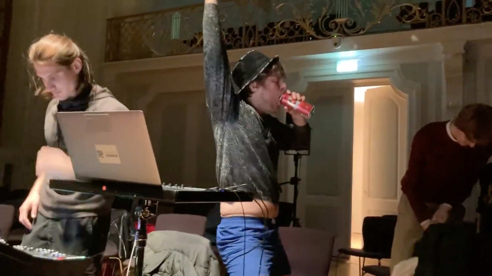
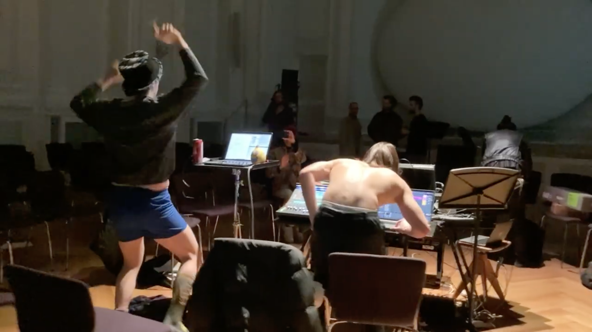

Utopia 1
is a DJ-performance that playfully presents a DJ partying to pop music as an artistic ideal.



inspired by Leibniz's assertion that we live in the "best of all possible worlds,"
Against this background,
On the one hand, the work celebrates pop music with a certain humorous distance. On the other, it is a provocation: does party culture really fulfill the promise of civilization?
To this end, there is a contradiction: a utopia is not actual, while our world is actual. Can the musical work, by presenting a constructed, possible world, ever fully be a utopia, or is this not possible due to its appearance in the world?
This piece was performed in collaboration with electronic composer and producer Tim Shatnyy, who provided beats of his own at key moments.
Utopia 1
interprets the (grossly paraphrased) idea of Leibniz – that since our world is the actual world out of all possible worlds, it must be the most fit, since God selected it from all others.
Against this background,
Utopia 1
would present an example of this fitness as a pair of DJs having a great time dancing and drinking beer, basking in the glow of overproduced pop music. On the one hand, the work celebrates pop music with a certain humorous distance. On the other, it is a provocation: does party culture really fulfill the promise of civilization?
To this end, there is a contradiction: a utopia is not actual, while our world is actual. Can the musical work, by presenting a constructed, possible world, ever fully be a utopia, or is this not possible due to its appearance in the world?
This piece was performed in collaboration with electronic composer and producer Tim Shatnyy, who provided beats of his own at key moments.